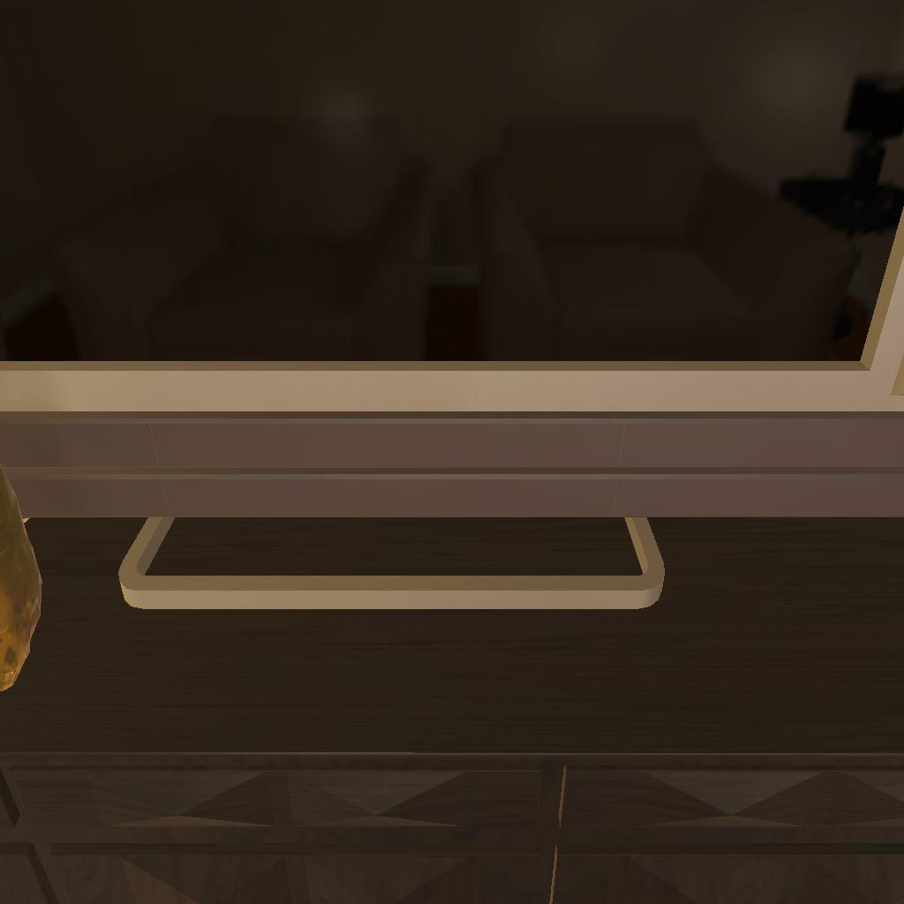

---------------------------------------------------------task: 7---------------------------------------------------------
--------------------------------------------------------------------------------------------------------------------------------------------------------------------
--------------------------------------------------------------------------------------------------------------------------------------------------------------------
Step:--------------------------------------------------------------------------9-------------------------------------------------------------------------------
----------------------------------------
VLM Prompt:
Image1:
Image2:
**Instruction**
1. Analyze the provided images to identify all visible household objects and compare the difference between images (e.h. whether the object is opened or not and taken on hand or not), focusing on those relevant to the task description "put a creditcard in coffeetable."
2. Use the analysis of images and the task hint "The agent must find an object of the desired type, pick it up, find the correct location to place it, and put it down there." to answer the question: what is the most reasonable action in the choices for the task description "put a creditcard in coffeetable"?
3. Decide and write the answer using the template: The answer is: (i): , where i is the real number. If there is no desired object in images, search every place based on **Initial Observation** to find the object. And if no one is exactly correct, choose a similar answer.
**Initial Observation**
You are in the middle of a room. Looking quickly around you, you can see armchair (1-2), dresser (1), garbagecan (1), cabinet (1-4), drawer (1-4), coffeetable (1), sidetable (1), sofa (1)
**Answer Choices**
(1): go to armchair 1
(2): go to armchair 2
(3): go to garbagecan 1
(4): go to cabinet 1
(5): go to drawer 1
(6): go to drawer 2
(7): go to cabinet 2
(8): go to drawer 3
(9): go to cabinet 3
(10): go to drawer 4
(11): go to cabinet 4
(12): go to sidetable 1
(13): go to sofa 1
(14): take television 1 from dresser 1
(15): take statue 1 from dresser 1
(16): examine dresser 1
**Answer**
Let's think step by step by following the instructions.
----------------------------------------
----------------------------------------
Original Response:
Image Analysis:
- In Image 1, there is a coffee table with an open cardboard box and a television remote on it. There are no visible credit cards on the coffee table or in the immediate vicinity. The room has a door and a light switch on the wall.
- In Image 2, we see a reflection in a mirror or glass surface that shows a room with some furniture, but it's too dark and blurry to distinguish any specific objects. There is no clear sign of a credit card.
Task Analysis:
- The task is to put a credit card on the coffee table. Since no credit card is visible in the provided images, the agent must search for it.
Initial Observation:
- The initial observation lists various furniture items where the credit card might be located, such as armchairs, a dresser, a garbage can, cabinets, drawers, a coffee table, a side table, and a sofa.
Answer:
- Based on the task description and initial observation, the agent should search the locations where a credit card is most likely to be found, such as drawers or cabinets, as these are common places to store small objects like cards. Since the coffee table is visible and does not have the credit card on it, the agent should start by searching the nearby storage furniture.
The answer is: (5): go to drawer 1. This action is reasonable because drawers are among the typical places where one might keep a credit card, and it is a logical first step in searching for the object needed to complete the task. If the credit card is not found in drawer 1, the agent can proceed to search other drawers or cabinets.
----------------------------------------
----------------------------------------
>>> Refine Original VLM Response and Get Pure Action: go to drawer 1
----------------------------------------
-----------------------------------------------------------------
Running time: 17.065393686294556 seconds
Total Money: 2.793670000000001
-----------------------------------------------------------------
-----------------------------------------------------------------
Text Observation:You arrive at loc 5. The drawer 1 is closed.
-----------------------------------------------------------------
UNSUCCEED